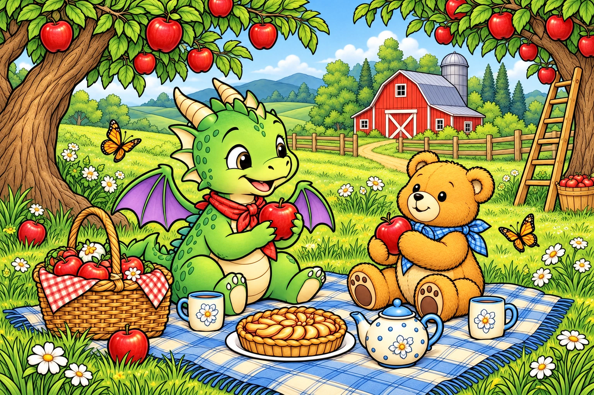

22 PICTURES · 60 COLORS
Coloring Studio
Pick a picture, choose your paints, and make it your own.
Your pictures stay on this device. Save a copy or print your artwork.

22 PICTURES · 60 COLORS
Pick a picture, choose your paints, and make it your own.
Your pictures stay on this device. Save a copy or print your artwork.